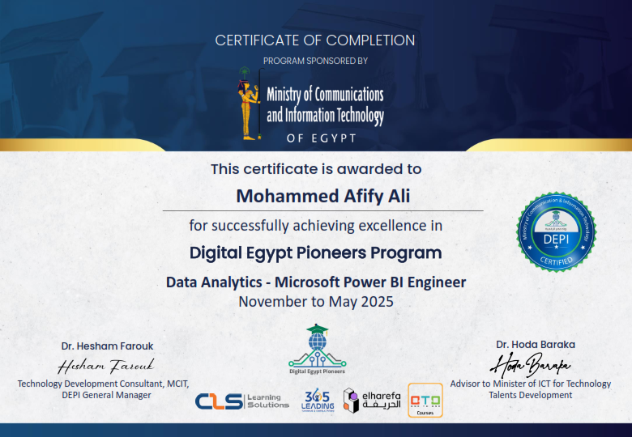
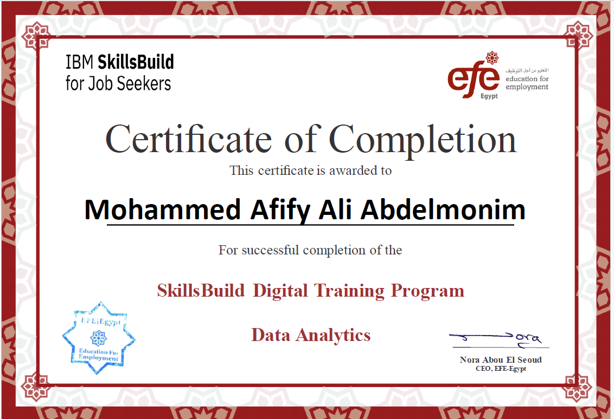
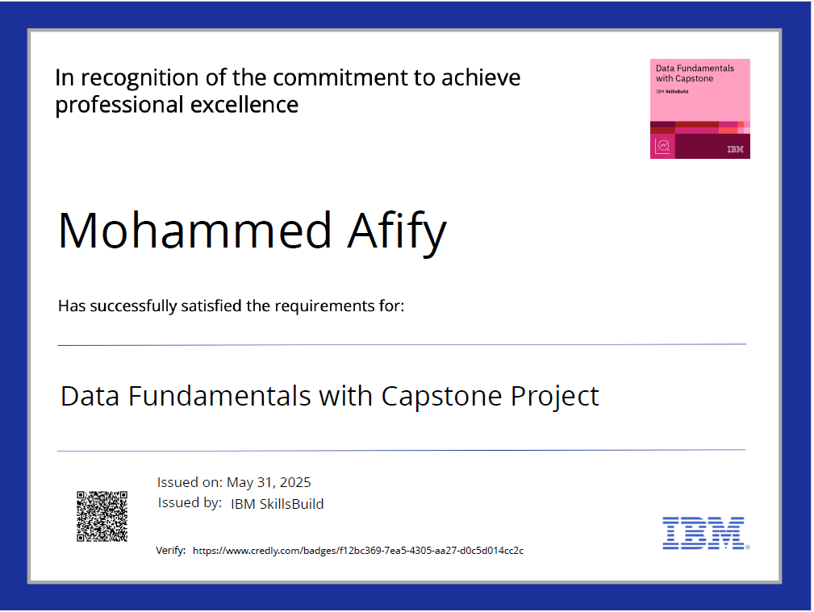
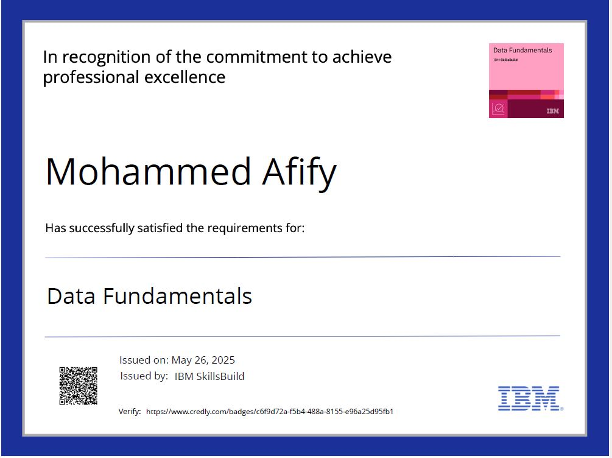
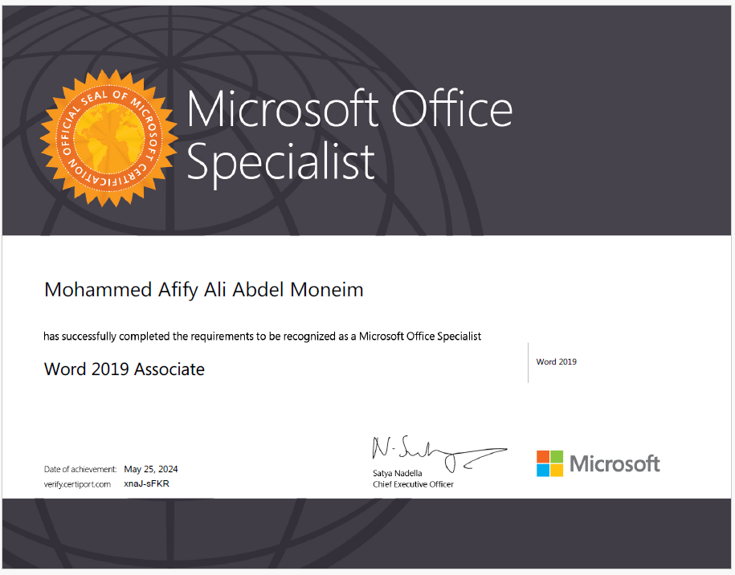
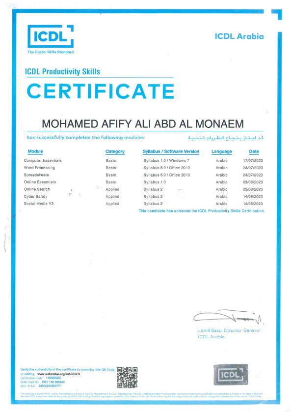
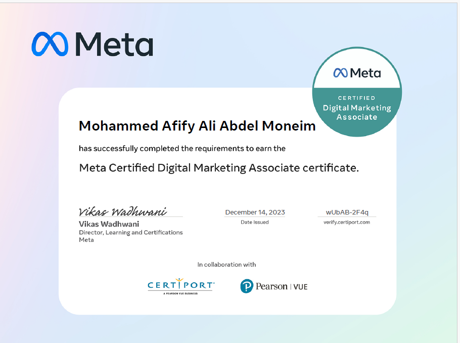
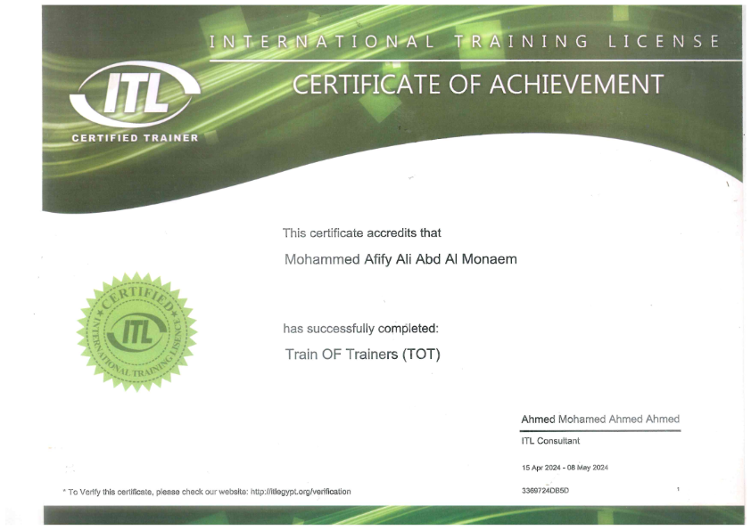
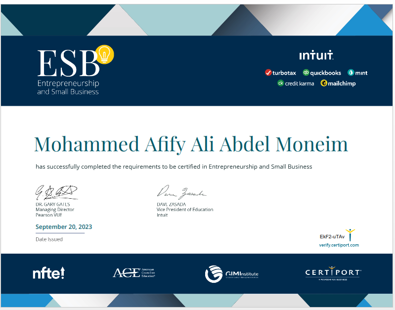

عرض الصورة كاملة ↗
تحليل البيانات وذكاء الأعمال
Data Analytics – Microsoft Power BI Engineer
Digital Egypt Pioneers Program · Ministry of Communications and Information Technology
نوفمبر إلى مايو 2025ملف مهني يجمع الشهادات الأصلية ونماذج الأعمال والمهارات في مكان واحد، بتصميم واضح يسهل استعراضه والتحقق من تفاصيله.
الجمع بين التطوير المهني والعمل التعليمي، من خلال شعار Mohammed Afify وهوية إدراك للحضانة ومركز التدريب، في مساحة واحدة واضحة داخل الملف الشخصي.
أعمل في مجالات المحاسبة وتحليل البيانات وتطوير الحلول الرقمية، مع اهتمام بأنظمة ERP والبرمجة وإعداد التقارير ولوحات المعلومات، إلى جانب التدريب والتعليم وتقديم المحتوى بصورة عملية تساعد على تحويل المعرفة إلى تطبيق.
صورة تعريفية مهنية للملف الشخصي.
الاهتمام بالمحاسبة وتحليل البيانات والتقارير ولوحات المعلومات، إلى جانب التدريب وتطوير المحتوى التعليمي.
هذه صور الشهادات الأصلية المستخرجة من نسخة Google Sites المحمّلة. اضغط على أي شهادة لفتح الصورة بالحجم الكامل.

عرض الصورة كاملة ↗Digital Egypt Pioneers Program · Ministry of Communications and Information Technology
نوفمبر إلى مايو 2025
عرض الصورة كاملة ↗IBM SkillsBuild · EFE-Egypt

عرض الصورة كاملة ↗IBM SkillsBuild
31 مايو 2025
عرض الصورة كاملة ↗IBM SkillsBuild
26 مايو 2025
عرض الصورة كاملة ↗Microsoft · Certiport
25 مايو 2024
عرض الصورة كاملة ↗ICDL Arabia

عرض الصورة كاملة ↗Meta · Certiport · Pearson VUE
14 ديسمبر 2023Communication Skills for Business · HCL · ACE · Certiport
27 أغسطس 2023
عرض الصورة كاملة ↗International Training License (ITL)
15 أبريل – 08 مايو 2024
عرض الصورة كاملة ↗ESB · Intuit · Certiport
20 سبتمبر 2023تم عرض الصور الأصلية كما هي دون تعديل محتواها. يمكن فتح كل صورة بشكل منفصل للتحقق من تفاصيلها وتاريخها.
استكشف نماذج الأعمال والمسارات التعليمية المرتبطة بالمهارات المهنية.
تنظيم البيانات وعرض المؤشرات بصورة تدعم فهم النتائج ومتابعة الأداء.
استكشف مسار تحليل البيانات ←استخدام الجداول والصيغ والتقارير لتسهيل المتابعة ومراجعة البيانات.
استكشف مسار Excel ←تنظيم الدروس والموضوعات والمواد التدريبية في مسارات واضحة.
استكشف المحتوى التعليمي ←افتح نسخة السيرة الذاتية باللغة المناسبة.